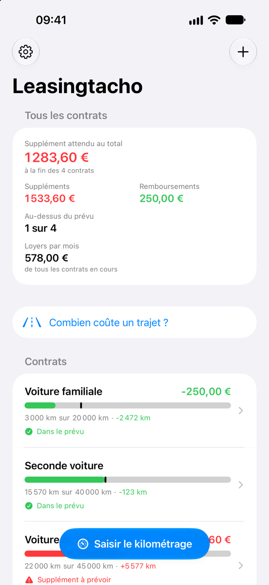
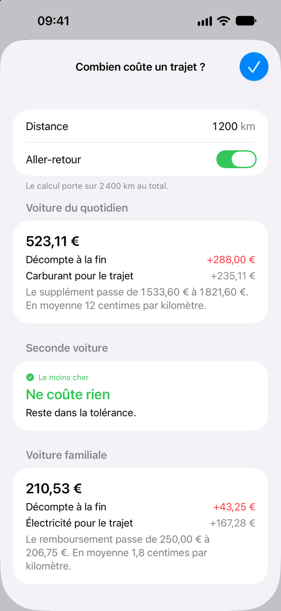
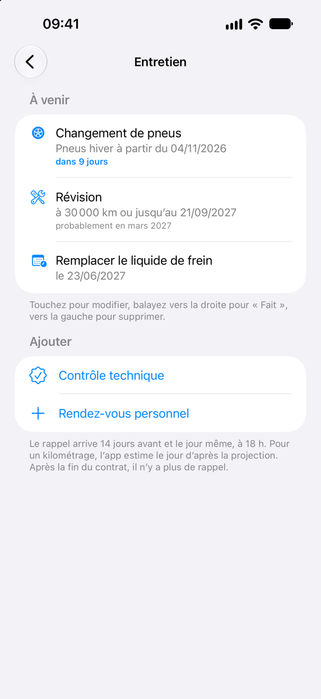
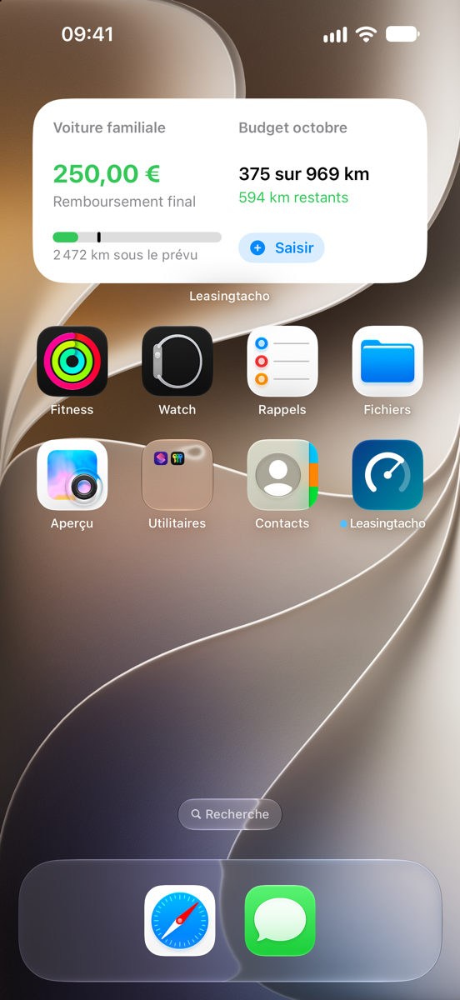
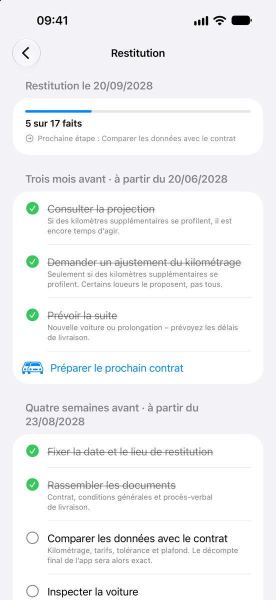
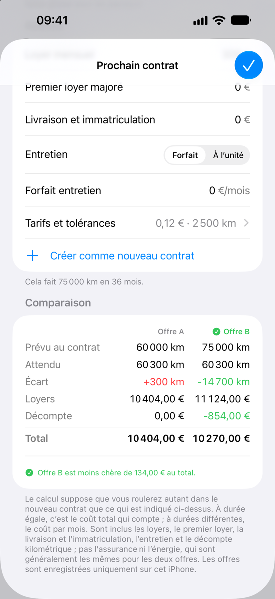
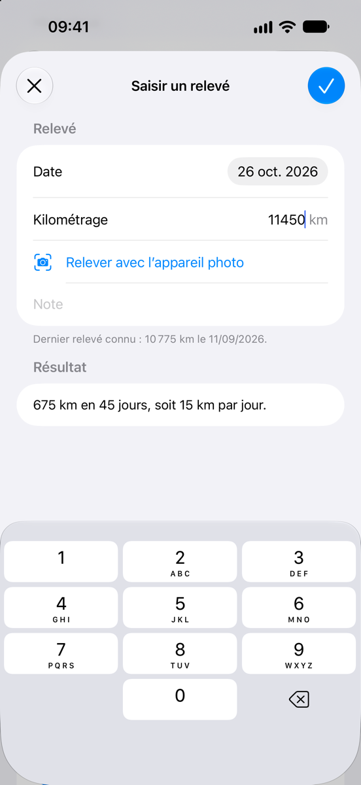
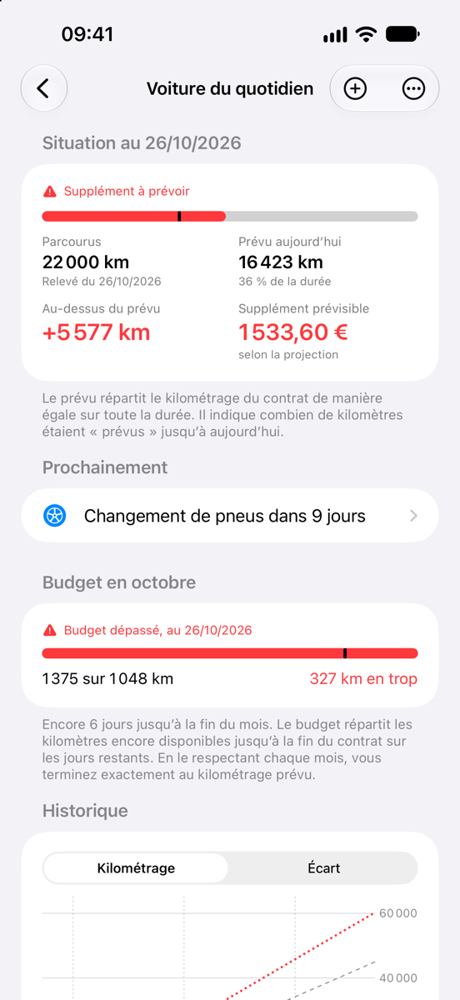

Ce que fait l’app
En LOA, en LLD ou en leasing social, le kilométrage est décompté à la restitution : les kilomètres supplémentaires se paient, les kilomètres non parcourus sont parfois remboursés. Leasingtacho vous montre dès maintenant où vous allez.
Analyser
-
Votre situation en un coup d’œil
Combien de kilomètres vous avez parcourus, combien sont prévus à ce jour et ce que cela représente à la fin du contrat : un supplément à payer ou un remboursement.
-
Projection jusqu’à la fin du contrat
D’après la moyenne des dernières semaines, depuis le début du contrat ou selon votre propre estimation annuelle. Et le calcul si plus aucun kilomètre ne s’ajoute à partir d’aujourd’hui.
-
Combien coûte ce trajet ?
Saisissez une distance, par exemple celle des vacances, et voyez ce qu’elle coûtera à la fin du contrat : plus de supplément, moins de remboursement ou rien du tout tant qu’elle reste dans la tolérance – plus l’électricité ou le carburant du trajet. Avec plusieurs voitures, l’app indique laquelle revient le moins cher.
-
Budget du mois
Combien de kilomètres vous pouvez faire ce mois-ci, combien sont déjà parcourus et combien restent disponibles – réparti de façon à arriver pile au kilométrage prévu au contrat.
-
Combien vous coûte vraiment votre voiture ?
Saisissez le loyer, le premier loyer majoré et les frais de livraison, plus l’assurance, un forfait entretien, des aides ou vos propres postes – par mois, par an ou une seule fois. Avec la consommation et le prix, l’app calcule aussi l’électricité ou le carburant jusqu’à la fin du contrat. Elle additionne le coût total sur toute la durée, supplément ou remboursement attendu compris, séparé entre leasing, énergie, entretien et frais courants, par mois et par kilomètre parcouru. Le prix d’une révision se saisit en cochant l’intervention. L’écran d’accueil réunit les loyers de toutes vos voitures.
-
Calcule comme votre contrat
Tarifs des kilomètres supplémentaires et non parcourus, tolérances et plafond de remboursement : vous les saisissez tels qu’ils figurent dans le contrat. Après la fin du contrat, l’app affiche le décompte final.
-
Historique et relevés
Un graphique montre les kilomètres parcourus, le prévu et la projection sur toute la durée. Les relevés sont classés par mois, avec les kilomètres parcourus chaque mois.
Saisir
-
Le kilométrage avec l’appareil photo
Visez le compteur avec l’appareil photo et touchez le kilométrage – ou choisissez une photo existante ; le relevé prend alors la date de la prise de vue. L’image est analysée uniquement sur votre iPhone.
-
D’un geste depuis l’écran d’accueil
« Saisir le kilométrage » se trouve en bas de l’écran d’accueil de l’app. Pour un contrat précis, il suffit de balayer sa ligne vers la droite.
-
Siri et Raccourcis
« Saisir le kilométrage » est disponible pour Siri, Spotlight et l’app Raccourcis. Le kilométrage est enregistré sans que vous ouvriez l’app. La commande figure aussi dans le menu de l’icône de l’app.
-
Rappels
Pour le prochain relevé, à l’intervalle de votre choix, et si vous le souhaitez quatre semaines avant la fin du contrat.
-
Widgets
Votre situation sur l’écran d’accueil et l’écran verrouillé, sans ouvrir l’app. Plus une commande « Saisir le kilométrage » pour le centre de contrôle et le bouton Action.
Gérer
-
Autant de contrats que vous voulez
Chaque contrat a sa propre page, et une vue d’ensemble réunit tous vos contrats.
-
L’entretien sous contrôle
Révision, changement de pneus, contrôle technique et vos propres rendez-vous – à une date, à un kilométrage ou les deux. Pour un kilométrage, l’app estime quand vous l’atteindrez d’après votre façon de rouler et vous le rappelle deux semaines avant. Après « Fait », le prochain rendez-vous est déjà prévu.
-
Liste de contrôle pour la restitution
Ce qu’il faut faire trois mois, quatre semaines et une semaine avant la restitution, le jour même et après – avec les dates qui découlent de votre fin de contrat. Vous ajoutez vos propres points.
-
Préparer le prochain contrat
L’app montre combien vous roulez vraiment par an et quel forfait kilométrique vous correspond. Saisissez deux offres et voyez laquelle revient le moins cher au final : loyers, premier loyer, livraison et entretien, plus le supplément ou le remboursement attendu. L’offre choisie devient votre nouveau contrat en un geste.
-
Un contrat comme modèle
Le prochain contrat reprend la durée, les tarifs, les tolérances et les rappels de l’ancien – vous ne saisissez que ce qui a changé.
-
Synchronisation via iCloud
Contrats et relevés sont stockés dans votre iCloud privé et vous suivent ainsi sur un nouvel iPhone.
-
Verrouillage de l’app
Si vous le souhaitez, avec Face ID, Touch ID ou le code de l’appareil. Les widgets de l’écran verrouillé n’affichent alors plus de chiffres.
-
Export
Les relevés en tableau (CSV) et la situation du jour sous forme de rapport – à partager ou à conserver.
-
Sans compte, sans publicité, sans pistage
Vos données restent chez vous. L’éditeur de l’app ne les voit pas. Pour en savoir plus, consultez la politique de confidentialité.
Prix
D’abord essayer, puis acheter une seule fois.
- Sans abonnement
- Sans publicité
- 4,99 € une seule fois
-
7 jours d’essai gratuit
Toutes les fonctions, sans restriction. L’essai se termine de lui-même, sans aucun frais.
-
Ensuite 4,99 € une seule fois
Un achat unique dans l’app débloque la version complète – définitivement et sur tous les appareils associés à votre compte Apple. En Suisse, elle coûte CHF 5.00.
-
Sans achat
Vos contrats et relevés restent visibles et exportables. Vous pouvez toujours consulter la liste de contrôle pour la restitution, les coûts et les rendez-vous d’entretien. Saisir de nouveaux relevés ou de nouveaux contrats, calculer un trajet, préparer le prochain contrat, cocher la liste de contrôle et planifier l’entretien nécessitent la version complète.
Ce prix s’applique en France ; dans les autres pays, l’app vous indique le montant local avant l’achat. Si vous avez déjà acheté, vous récupérez la version complète sur un autre appareil dans les réglages de l’app, avec « Restaurer les achats ».

Questions et réponses
Comment fonctionne l’essai ?
Pendant 7 jours, vous pouvez utiliser toutes les fonctions sans restriction. Au début de l’essai, l’app déclenche un achat gratuit via l’App Store – rien n’est facturé et aucun abonnement ne commence.
Apple enregistre la date dans votre compte Apple. L’essai vaut donc de la même façon sur tous vos appareils et ne recommence pas après une réinstallation.
Que se passe-t-il à la fin de l’essai ?
Rien qui vous coûte de l’argent. Vos contrats et relevés restent visibles et vous pouvez toujours les exporter. Pour saisir de nouveaux relevés ou de nouveaux contrats, calculer des trajets et préparer le prochain contrat, il vous faut la version complète, un achat unique dans l’app pour 4,99 €.
Comment récupérer la version complète sur un nouvel iPhone ?
L’achat vaut sur tous les appareils associés à votre compte Apple. Connectez-vous sur le nouvel appareil avec le même compte Apple et touchez « Restaurer les achats » dans les réglages de l’app. Rien n’est facturé.
Comment mes données arrivent-elles sur un autre appareil ?
Par iCloud. Si le même compte Apple est connecté sur vos appareils et qu’iCloud est activé pour Leasingtacho, l’app synchronise d’elle-même contrats et relevés – y compris lors du passage à un nouvel iPhone.
Les données restent dans votre iCloud privé ; l’éditeur de l’app n’y a pas accès. Sans iCloud, elles restent uniquement sur l’appareil.
Comment exporter mes données ?
Ouvrez un contrat et faites défiler jusqu’à la section de partage. Vous pouvez y créer un fichier CSV avec tous les relevés, à ouvrir par exemple avec Numbers ou Excel, ou un rapport texte qui résume la situation du jour.
Vous choisissez vous-même la destination du fichier dans le menu de partage. Cela fonctionne aussi après l’essai, sans achat.
Comment supprimer mes données ?
Pour supprimer un relevé, balayez-le vers la gauche dans la liste. Un contrat et tous ses relevés se suppriment de la même façon sur l’écran d’accueil de l’app, ou par un appui long sur sa ligne. Avec iCloud, il disparaît aussi de vos autres appareils.
Pour tout effacer, supprimez l’app et la copie dans iCloud : Réglages → votre nom → iCloud → Gérer le stockage → Leasingtacho.
L’appareil photo reconnaît-il toujours le bon kilométrage ?
Pas toujours – c’est pourquoi l’app ne reprend que le nombre que vous touchez. Elle ignore autant que possible le compteur journalier, l’autonomie, l’heure et la température. Vérifiez la valeur avant d’enregistrer ; au besoin, saisissez-la simplement au clavier.
Leasingtacho convient-il à mon contrat ?
Leasingtacho convient à tout contrat qui prévoit un kilométrage : LOA, LLD ou leasing social. Vous saisissez le kilométrage prévu au contrat, le tarif des kilomètres supplémentaires et, le cas échéant, la tolérance et le remboursement des kilomètres non parcourus, tels qu’ils figurent dans votre contrat.
Et si j’achète la voiture à la fin de ma LOA ?
Si vous levez l’option d’achat, vous ne restituez pas la voiture, et en général aucun kilomètre supplémentaire n’est facturé. La projection vous aide alors à décider à temps : elle montre ce que vous coûterait la restitution. Plus d’informations dans le guide Dépassement kilométrique en LOA et LLD.
Les montants sont-ils garantis ?
Non. Leasingtacho calcule avec les informations que vous reprenez de votre contrat et avec vos relevés. Une projection est une estimation fondée sur votre kilométrage passé. Les autres frais de restitution, par exemple pour des dommages, ne sont pas pris en compte.
Toutes les informations sont fournies sans garantie. Seul le décompte de votre loueur fait foi.
L’éditeur de l’app voit-il mes données ?
Non. L’app n’envoie aucune donnée à l’éditeur, et il n’y a ni compte ni pistage. Les détails figurent dans la politique de confidentialité.
Sur quels appareils Leasingtacho fonctionne-t-il ?
Sur iPhone avec iOS 18 ou ultérieur.
Guide
Comprendre comment les kilomètres sont décomptés à la restitution.
-
Dépassement kilométrique en LOA et LLD
Ce que coûte un kilomètre supplémentaire, comment le décompte est calculé et comment éviter le supplément – avec un exemple chiffré et une liste de contrôle.
Contact
Une question, un problème ou une idée pour la prochaine version ? Écrivez à

En cas de problème, une courte description de ce que vous avez fait et de ce qui s’est passé aide beaucoup – avec une capture d’écran si possible.